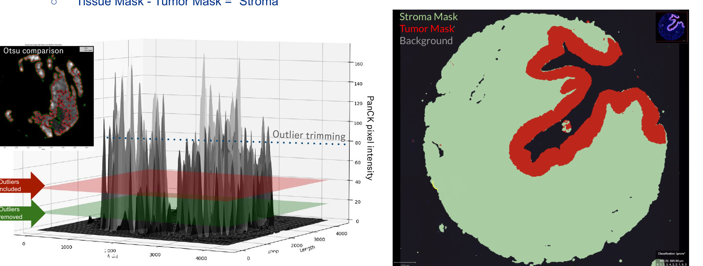

A Python-native computational imaging pipeline for multiplexed tissue image analysis: automated segmentation, intensity normalization, and tissue compartment classification.
During a research internship at Genentech (Roche Group, South San Francisco), designed and implemented a Python-based computational imaging pipeline to process multiplexed immunofluorescence (mIF) tissue images. The goal was to automate core preprocessing steps — tissue segmentation, marker intensity normalization, and anatomical compartment classification — enabling reproducible, high-throughput analysis across large image cohorts.
The work directly supported downstream oncology research by delivering clean, classified tissue regions (tumor, stroma, background) as inputs to biomarker quantification and spatial analysis workflows.

Left: Otsu-based tissue segmentation overlay comparing thresholding methods on PanCK-stained tissue. Center: 3D surface plot of PanCK pixel intensity across the slide, with outlier trimming cutoff visualized (red = outliers included; green = post-trim). Right: Final three-class tissue compartment mask — Stroma (green), Tumor (red), Background (black).
Applied Otsu-based thresholding on the PanCK channel to delineate tissue from glass/background. Multiple thresholding strategies were evaluated side-by-side to maximize tissue recall while rejecting background artifacts.
Computed 3D surface distributions of PanCK pixel intensity across the full tissue area. Identified and trimmed high-intensity outlier pixels that skew normalization — shown as the dashed cutoff line in the surface plot. This step ensures downstream marker quantification is not dominated by saturated regions.
Generated pixel-level tissue masks classifying each region as Tumor (PanCK-positive), Stroma (tissue-positive, PanCK-negative), or Background. These masks feed directly into region-specific biomarker analysis — e.g., computing TIL density within stroma vs. tumor separately.